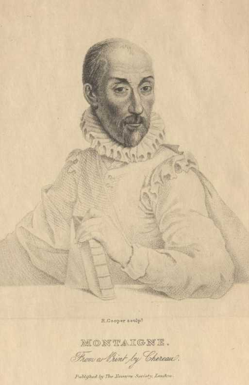
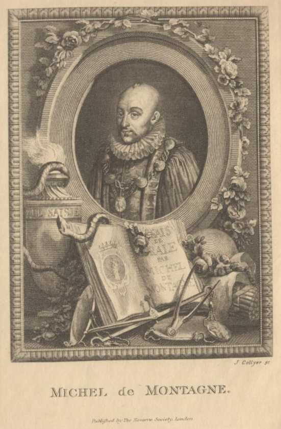
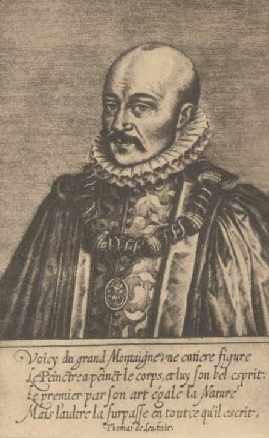
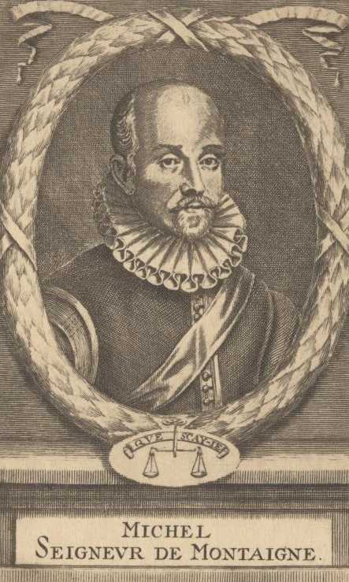

Title: Quotes and Images From The Works of Michel De Montaigne
Author: Michel de Montaigne
Editor: David Widger
Release date: September 3, 2004 [eBook #7551]
Most recently updated: December 30, 2020
Language: English
Other information and formats: www.gutenberg.org/ebooks/7551
Credits: Produced by David Widger
>
A child should not be brought up in his mother's lap
A gallant man does not give over his pursuit for being refused
A generous heart ought not to belie its own thoughts
A hundred more escape us than ever come to our knowledge
A lady could not boast of her chastity who was never tempted
A little cheese when a mind to make a feast
A little thing will turn and divert us
A man may always study, but he must not always go to school
A man may govern himself well who cannot govern others so
A man may play the fool in everything else, but not in poetry
A man must either imitate the vicious or hate them
A man must have courage to fear
A man never speaks of himself without loss
A man should abhor lawsuits as much as he may
A man should diffuse joy, but, as much as he can, smother grief
A man's accusations of himself are always believed
A parrot would say as much as that
A person's look is but a feeble warranty
A well-bred man is a compound man
A well-governed stomach is a great part of liberty
A word ill taken obliterates ten years' merit
Abhorrence of the patient are necessary circumstances
Abominate that incidental repentance which old age brings
Accept all things we are not able to refute
Accommodated my subject to my strength
Accursed be thou, as he that arms himself for fear of death
Accusing all others of ignorance and imposition
Acquiesce and submit to truth
Acquire by his writings an immortal life
Addict thyself to the study of letters
Addresses his voyage to no certain, port
Admiration is the foundation of all philosophy
Advantageous, too, a little to recede from one's right
Advise to choose weapons of the shortest sort
Affect words that are not of current use
Affection towards their husbands, (not) until they have lost them
Affirmation and obstinacy are express signs of want of wit
Affright people with the very mention of death
Against my trifles you could say no more than I myself have said
Age imprints more wrinkles in the mind than it does on the face
Agesilaus, what he thought most proper for boys to learn?
Agitated betwixt hope and fear
Agitation has usurped the place of reason
Alexander said, that the end of his labour was to labour
All actions equally become and equally honour a wise man
All apprentices when we come to it (death)
All defence shows a face of war
All I aim at is, to pass my time at my ease
All I say is by way of discourse, and nothing by way of advice
All judgments in gross are weak and imperfect
All over-nice solicitude about riches smells of avarice
All things have their seasons, even good ones
All think he has yet twenty good years to come
All those who have authority to be angry in my family
Almanacs
Always be parading their pedantic science
Always complaining is the way never to be lamented
Always the perfect religion
Am as jealous of my repose as of my authority
An advantage in judgment we yield to none
"An emperor," said he, "must die standing"
An ignorance that knowledge creates and begets
Ancient Romans kept their youth always standing at school
And hate him so as you were one day to love him
And we suffer the ills of a long peace
Anger and hatred are beyond the duty of justice
Any argument if it be carried on with method
Any old government better than change and alteration
Any one may deprive us of life; no one can deprive us of death
Anything appears greatest to him that never knew a greater
Anything becomes foul when commended by the multitude
Anything of value in him, let him make it appear in his conduct
Appetite comes to me in eating
Appetite is more sharp than one already half-glutted by the eyes
Appetite runs after that it has not
Appetite to read more, than glutted with that we have
Applaud his judgment than commend his knowledge
Apprenticeship and a resemblance of death
Apprenticeships that are to be served beforehand
Apt to promise something less than what I am able to do
Archer that shoots over, misses as much as he that falls short
Armed parties (the true school of treason, inhumanity, robbery
Arrogant ignorance
Art that could come to the knowledge of but few persons
"Art thou not ashamed," said he to him, "to sing so well?"
Arts of persuasion, to insinuate it into our minds
As great a benefit to be without (children)
As if anything were so common as ignorance
As if impatience were of itself a better remedy than patience
As we were formerly by crimes, so we are now overburdened by law
Ashamed to lay out as much thought and study upon it
Assurance they give us of the certainty of their drugs
At least, if they do no good, they will do no harm
At the most, but patch you up, and prop you a little
Attribute facility of belief to simplicity and ignorance
Attribute to itself; all the happy successes that happen
Authority of the number and antiquity of the witnesses
Authority to be dissected by the vain fancies of men
Authority which a graceful presence and a majestic mien beget
Avoid all magnificences that will in a short time be forgotten
Away with that eloquence that enchants us with itself
Away with this violence! away with this compulsion!
Bashfulness is an ornament to youth, but a reproach to old age
Be not angry to no purpose
Be on which side you will, you have as fair a game to play
Bears well a changed fortune, acting both parts equally well
Beast of company, as the ancient said, but not of the herd
Beauty of stature is the only beauty of men
Because the people know so well how to obey
Become a fool by too much wisdom
Being as impatient of commanding as of being commanded
Being dead they were then by one day happier than he
Being over-studious, we impair our health and spoil our humour
Belief compared to the impression of a seal upon the soul
Believing Heaven concerned at our ordinary actions
Best part of a captain to know how to make use of occasions
Best test of truth is the multitude of believers in a crowd
Best virtue I have has in it some tincture of vice
Better at speaking than writing—Motion and action animate word
Better have none at all than to have them in so prodigious a number
Better to be alone than in foolish and troublesome company
Blemishes of the great naturally appear greater
Books go side by side with me in my whole course
Books have many charming qualities to such as know how to choose
Books have not so much served me for instruction as exercise
Books I read over again, still smile upon me with fresh novelty
Books of things that were never either studied or understood
Both himself and his posterity declared ignoble, taxable
Both kings and philosophers go to stool
Burnt and roasted for opinions taken upon trust from others
Business to-morrow
But ill proves the honour and beauty of an action by its utility
But it is not enough that our education does not spoil us
By resenting the lie we acquit ourselves of the fault
By suspecting them, have given them a title to do ill
"By the gods," said he, "if I was not angry, I would execute you"
By the misery of this life, aiming at bliss in another
Caesar: he would be thought an excellent engineer to boot
Caesar's choice of death: "the shortest"
Can neither keep nor enjoy anything with a good grace
Cannot stand the liberty of a friend's advice
Carnal appetites only supported by use and exercise
Cato said: So many servants, so many enemies
Ceremony forbids us to express by words things that are lawful
Certain other things that people hide only to show them
Change is to be feared
Change of fashions
Change only gives form to injustice and tyranny
Cherish themselves most where they are most wrong
Chess: this idle and childish game
Chiefly knew himself to be mortal by this act
Childish ignorance of many very ordinary things
Children are amused with toys and men with words
Cicero: on fame
Civil innocence is measured according to times and places
Cleave to the side that stood most in need of her
cloak on one shoulder, my cap on one side, a stocking disordered
College: a real house of correction of imprisoned youth
Coming out of the same hole
Commit themselves to the common fortune
Common consolation, discourages and softens me
Common friendships will admit of division
Conclude the depth of my sense by its obscurity
Concluding no beauty can be greater than what they see
Condemn all violence in the education of a tender soul
Condemn the opposite affirmation equally
Condemnations have I seen more criminal than the crimes
Condemning wine, because some people will be drunk
Confession enervates reproach and disarms slander
Confidence in another man's virtue
Conscience makes us betray, accuse, and fight against ourselves
Conscience, which we pretend to be derived from nature
Consent, and complacency in giving a man's self up to melancholy
Consoles himself upon the utility and eternity of his writings
Content: more easily found in want than in abundance
Counterfeit condolings of pretenders
Courageous in death, not because his soul is immortal—Socrates
Courtesy and good manners is a very necessary study
Crafty humility that springs from presumption
Crates did worse, who threw himself into the liberty of poverty
Cruelty is the very extreme of all vices
Culling out of several books the sentences that best please me
Curiosity and of that eager passion for news
Curiosity of knowing things has been given to man for a scourge
"Custom," replied Plato, "is no little thing"
Customs and laws make justice
Dangerous man you have deprived of all means to escape
Dangers do, in truth, little or nothing hasten our end
Dearness is a good sauce to meat
Death can, whenever we please, cut short inconveniences
Death conduces more to birth and augmentation than to loss
Death discharges us of all our obligations
Death has us every moment by the throat
Death is a part of you
Death is terrible to Cicero, coveted by Cato
Death of old age the most rare and very seldom seen
Deceit maintains and supplies most men's employment
Decree that says, "The court understands nothing of the matter"
Defence allures attempt, and defiance provokes an enemy
Defend most the defects with which we are most tainted
Defer my revenge to another and better time

>
Deformity of the first cruelty makes me abhor all imitation
Delivered into our own custody the keys of life
Denying all solicitation, both of hand and mind
Depend as much upon fortune as anything else we do
Desire of riches is more sharpened by their use than by the need
Desire of travel
Desires, that still increase as they are fulfilled
Detest in others the defects which are more manifest in us
Did my discourses came only from my mouth or from my heart
Did not approve all sorts of means to obtain a victory
Die well—that is, patiently and tranquilly
Difference betwixt memory and understanding
Difficulty gives all things their estimation
Dignify our fopperies when we commit them to the press
Diogenes, esteeming us no better than flies or bladders
Discover what there is of good and clean in the bottom of the po
Disdainful, contemplative, serious and grave as the ass
Disease had arrived at its period or an effect of chance?
Disgorge what we eat in the same condition it was swallowed
Disguise, by their abridgments and at their own choice
Dissentient and tumultuary drugs
Diversity of medical arguments and opinions embraces all
Diverting the opinions and conjectures of the people
Do not much blame them for making their advantage of our folly
Do not to pray that all things may go as we would have them
Do not, nevertheless, always believe myself
Do thine own work, and know thyself
Doctors: more felicity and duration in their own lives?
Doctrine much more intricate and fantastic than the thing itself
Dost thou, then, old man, collect food for others' ears?
Doubt whether those (old writings) we have be not the worst
Doubtful ills plague us worst
Downright and sincere obedience
Drugs being in its own nature an enemy to our health
Drunkeness a true and certain trial of every one's nature
Dying appears to him a natural and indifferent accident
Each amongst you has made somebody cuckold
Eat your bread with the sauce of a more pleasing imagination
Education
Education ought to be carried on with a severe sweetness
Effect and performance are not at all in our power
Either tranquil life, or happy death
Eloquence prejudices the subject it would advance
Emperor Julian, surnamed the Apostate
Endeavouring to be brief, I become obscure
Engaged in the avenues of old age, being already past forty
Enough to do to comfort myself, without having to console others
Enslave our own contentment to the power of another?
Enters lightly into a quarrel is apt to go as lightly out of it
Entertain us with fables: astrologers and physicians
Epicurus
Establish this proposition by authority and huffing
Evade this tormenting and unprofitable knowledge
Even the very promises of physic are incredible in themselves
Events are a very poor testimony of our worth and parts
Every abridgment of a good book is a foolish abridgment
Every day travels towards death; the last only arrives at it
Every government has a god at the head of it
Every man thinks himself sufficiently intelligent
Every place of retirement requires a walk
Everything has many faces and several aspects
Examine, who is better learned, than who is more learned
Excel above the common rate in frivolous things
Excuse myself from knowing anything which enslaves me to others
Executions rather whet than dull the edge of vices
Expresses more contempt and condemnation than the other
Extend their anger and hatred beyond the dispute in question
Extremity of philosophy is hurtful
Fabric goes forming and piling itself up from hand to hand
Fame: an echo, a dream, nay, the shadow of a dream
Fancy that others cannot believe otherwise than as he does
Fantastic gibberish of the prophetic canting
Far more easy and pleasant to follow than to lead
Fathers conceal their affection from their children
Fault not to discern how far a man's worth extends
Fault will be theirs for having consulted me
Fear and distrust invite and draw on offence
Fear is more importunate and insupportable than death itself
Fear of the fall more fevers me than the fall itself
Fear to lose a thing, which being lost, cannot be lamented?
Fear was not that I should do ill, but that I should do nothing
Fear: begets a terrible astonishment and confusion
Feared, lest disgrace should make such delinquents desperate
Feminine polity has a mysterious procedure
Few men have been admired by their own domestics
Few men have made a wife of a mistress, who have not repented it
First informed who were to be the other guests
First thing to be considered in love matters: a fitting time
Flatterer in your old age or in your sickness
Follies do not make me laugh, it is our wisdom which does
Folly and absurdity are not to be cured by bare admonition
Folly of gaping after future things
Folly satisfied with itself than any reason can reasonably be
Folly than to be moved and angry at the follies of the world
Folly to hazard that upon the uncertainty of augmenting it
Folly to put out their own light and shine by a borrowed lustre
For fear of the laws and report of men
For who ever thought he wanted sense?
Fortune heaped up five or six such-like incidents
Fortune rules in all things
Fortune sometimes seems to delight in taking us at our word
Fortune will still be mistress of events
Fox, who found fault with what he could not obtain
Friend, it is not now time to play with your nails
Friend, the hook will not stick in such soft cheese
Friendships that the law and natural obligation impose upon us
Fruits of public commotion are seldom enjoyed
Gain to change an ill condition for one that is uncertain
Gave them new and more plausible names for their excuse
Gentleman would play the fool to make a show of defence
Gently to bear the inconstancy of a lover
Gewgaw to hang in a cabinet or at the end of the tongue
Give but the rind of my attention
Give me time to recover my strength and health
Give the ladies a cruel contempt of our natural furniture
Give these young wenches the things they long for
Give us history, more as they receive it than as they believe it
Giving is an ambitious and authoritative quality
Glory and curiosity are the scourges of the soul
Go out of ourselves, because we know not how there to reside
Good does not necessarily succeed evil; another evil may succeed
Good to be certain and finite, and evil, infinite and uncertain
Got up but an inch upon the shoulders of the last, but one
Gradations above and below pleasure
Gratify the gods and nature by massacre and murder
Great presumption to be so fond of one's own opinions
Greatest apprehensions, from things unseen, concealed
Greatest talkers, for the most part, do nothing to purpose
Greedy humour of new and unknown things
Grief provokes itself
Gross impostures of religions
Guess at our meaning under general and doubtful terms
Happen to do anything commendable, I attribute it to fortune
Hard to resolve a man's judgment against the common opinions
Haste trips up its own heels, fetters, and stops itself
Hate all sorts of obligation and restraint
Hate remedies that are more troublesome than the disease itself
Have ever had a great respect for her I loved
Have more wherewith to defray my journey, than I have way to go
Have no other title left me to these things but by the ears
Have you ever found any who have been dissatisfied with dying?
Having too good an opinion of our own worth
He cannot be good, seeing he is not evil even to the wicked
He did not think mankind worthy of a wise man's concern
He felt a pleasure and delight in so noble an action
He judged other men by himself
He may employ his passion, who can make no use of his reason
He may well go a foot, they say, who leads his horse in his hand
He must fool it a little who would not be deemed wholly a fool
He should discern in himself, as well as in others
He took himself along with him
He who fears he shall suffer, already suffers what he fears
He who is only a good man that men may know it
He who lays the cloth is ever at the charge of the feast
He who lives everywhere, lives nowhere
He who provides for all, provides for nothing
He who stops not the start will never be able to stop the course
He will choose to be alone
Headache should come before drunkenness
Health depends upon the vanity and falsity of their promises
Health is altered and corrupted by their frequent prescriptions
Health to be worth purchasing by all the most painful cauteries
Hearing a philosopher talk of military affairs
Heat and stir up their imagination, and then we find fault
Help: no other effect than that of lengthening my suffering
High time to die when there is more ill than good in living
Hoary head and rivilled face of ancient usage
Hobbes said that if he Had been at college as long as others—
Hold a stiff rein upon suspicion
Home anxieties and a mind enslaved by wearing complaints
Homer: The only words that have motion and action
Honour of valour consists in fighting, not in subduing
How infirm and decaying material this fabric of ours is
How many and many times he has been mistaken in his own judgment
How many more have died before they arrived at thy age
How many several ways has death to surprise us?
"How many things," said he, "I do not desire!"
How many worthy men have we known to survive their reputation
How much easier is it not to enter in than it is to get out
How much it costs him to do no worse
How much more insupportable and painful an immortal life
How uncertain duration these accidental conveniences are
Humble out of pride
Husbands hate their wives only because they themselves do wrong
I always find superfluity superfluous
I am a little tenderly distrustful of things that I wish
I am apt to dream that I dream
I am disgusted with the world I frequent
I am hard to be got out, but being once upon the road
I am no longer in condition for any great change
I am not to be cuffed into belief
I am plain and heavy, and stick to the solid and the probable
I am very glad to find the way beaten before me by others
I am very willing to quit the government of my house
I bequeath to Areteus the maintenance of my mother
I can more hardly believe a man's constancy than any virtue
I cannot well refuse to play with my dog
I content myself with enjoying the world without bustle
I dare not promise but that I may one day be so much a fool
I do not consider what it is now, but what it was then
I do not judge opinions by years
I do not much lament the dead, and should envy them rather
I do not say that 'tis well said, but well thought
I do not willingly alight when I am once on horseback
I enter into confidence with dying
I ever justly feared to raise my head too high
I every day hear fools say things that are not foolish
I find myself here fettered by the laws of ceremony
I find no quality so easy to counterfeit as devotion
I for my part always went the plain way to work
I grudge nothing but care and trouble
I had much rather die than live upon charity
I had rather be old a brief time, than be old before old age
I hail and caress truth in what quarter soever I find it
I hate all sorts of tyranny, both in word and deed
I hate poverty equally with pain
I have a great aversion from a novelty
"I have done nothing to-day"—"What? have you not lived?"
I have lived longer by this one day than I should have done
I have no mind to die, but I have no objection to be dead
I have not a wit supple enough to evade a sudden question
I have nothing of my own that satisfies my judgment
I honour those most to whom I show the least honour
I lay no great stress upon my opinions; or of others
I look upon death carelessly when I look upon it universally
I love stout expressions amongst gentle men
I love temperate and moderate natures
I need not seek a fool from afar; I can laugh at myself
I owe it rather to my fortune than my reason
I receive but little advice, I also give but little
I scorn to mend myself by halves
I see no people so soon sick as those who take physic
I speak truth, not so much as I would, but as much as I dare
I take hold of, as little glorious and exemplary as you will
I understand my men even by their silence and smiles
I was always superstitiously afraid of giving offence
I was too frightened to be ill
"I wish you good health"—"No health to thee" replied the other
I would as willingly be lucky as wise
I would be rich of myself, and not by borrowing
I write my book for few men and for few years
Idleness is to me a very painful labour
Idleness, the mother of corruption
If a passion once prepossess and seize me, it carries me away
If I am talking my best, whoever interrupts me, stops me
If I stand in need of anger and inflammation, I borrow it
If it be a delicious medicine, take it
If it be the writer's wit or borrowed from some other
If nature do not help a little, it is very hard
If they can only be kind to us out of pity
If they chop upon one truth, that carries a mighty report
If they hear no noise, they think men sleep
If to philosophise be, as 'tis defined, to doubt
Ignorance does not offend me, but the foppery of it
Impotencies that so unseasonably surprise the lover
Ill luck is good for something
Imagine the mighty will not abase themselves so much as to live
Imitating other men's natures, thou layest aside thy own
Immoderate either seeking or evading glory or reputation
Impose them upon me as infallible
Impostures: very strangeness lends them credit
Improperly we call this voluntary dissolution, despair
Impunity pass with us for justice

>
In everything else a man may keep some decorum
In ordinary friendships I am somewhat cold and shy
In solitude, be company for thyself—Tibullus
In sorrow there is some mixture of pleasure
In the meantime, their halves were begging at their doors
In this last scene of death, there is no more counterfeiting
In those days, the tailor took measure of it
In war not to drive an enemy to despair
Inclination to love one another at the first sight
Inclination to variety and novelty common to us both
Incline the history to their own fancy
Inconsiderate excuses are a kind of self-accusation
Inconveniences that moderation brings (in civil war)
Indiscreet desire of a present cure, that so blind us
Indocile liberty of this member
Inquisitive after everything
Insensible of the stroke when our youth dies in us
Insert whole sections and pages out of ancient authors
Intelligence is required to be able to know that a man knows not
Intemperance is the pest of pleasure
Intended to get a new husband than to lament the old
Interdict all gifts betwixt man and wife
Interdiction incites, and who are more eager, being forbidden
It (my books) may know many things that are gone from me
It happens, as with cages, the birds without despair to get in
It is better to die than to live miserable
It is no hard matter to get children
It is not a book to read, 'tis a book to study and learn
It is not for outward show that the soul is to play its part
It's madness to nourish infirmity
Jealousy: no remedy but flight or patience
Judge by justice, and choose men by reason
Judge by the eye of reason, and not from common report
Judgment of duty principally lies in the will
Judgment of great things is many times formed from lesser thing
Justice als takes cognisance of those who glean after the reaper
Killing is good to frustrate an offence to come, not to revenge
Knock you down with the authority of their experience
Knot is not so sure that a man may not half suspect it will slip
Knowledge and truth may be in us without judgment
Knowledge is not so absolutely necessary as judgment
Knowledge of others, wherein the honour consists
Known evil was ever more supportable than one that was, new
Ladies are no sooner ours, than we are no more theirs
Language: obscure and unintelligible in wills and contracts
Lascivious poet: Homer
Last death will kill but a half or a quarter of a man
Law: breeder of altercation and division
Laws (of Plato on travel), which forbids it after threescore
Laws cannot subsist without mixture of injustice
Laws do what they can, when they cannot do what they would
Laws keep up their credit, not for being just—but as laws
Lay the fault on the voices of those who speak to me
Laying themselves low to avoid the danger of falling
Learn my own debility and the treachery of my understanding
Learn the theory from those who best know the practice
Learn what it is right to wish
Learning improves fortunes enough, but not minds
Least end of a hair will serve to draw them into my discourse
Least touch or prick of a pencil in comparison of the whole
Leave society when we can no longer add anything to it
Leaving nothing unsaid, how home and bitter soever
Led by the ears by this charming harmony of words
Lend himself to others, and only give himself to himself
Lessen the just value of things that I possess
"Let a man take which course he will," said he; "he will repent"
Let him be as wise as he will, after all he is but a man
Let him be satisfied with correcting himself
Let him examine every man's talent
Let it alone a little
Let it be permitted to the timid to hope
Let not us seek illusions from without and unknown
Let us not be ashamed to speak what we are not ashamed to think
Let us not seek our disease out of ourselves; 'tis in us
Liberality at the expense of others
Liberty and laziness, the qualities most predominant in me
Liberty of poverty
Liberty to lean, but not to lay our whole weight upon others
Library: Tis there that I am in my kingdom
License of judgments is a great disturbance to great affairs
Life of Caesar has no greater example for us than our own
Life should be cut off in the sound and living part
Light griefs can speak: deep sorrows are dumb
Light prognostics they give of themselves in their tender years
Little affairs most disturb us
Little knacks and frivolous subtleties
Little learning is needed to form a sound mind"—Seneca
Little less trouble in governing a private family than a kingdom
Live a quite contrary sort of life to what they prescribe others
Live at the expense of life itself
Live, not so long as they please, but as long as they ought
Living is slavery if the liberty of dying be wanting
Living well, which of all arts is the greatest
Laying the fault upon the patient, by such frivolous reasons
Lodge nothing in his fancy upon simple authority and upon trust
Long a voyage I should at last run myself into some disadvantage
Long sittings at table both trouble me and do me harm
Long toleration begets habit; habit, consent and imitation
Look on death not only without astonishment but without care
Look upon themselves as a third person only, a stranger
Look, you who think the gods have no care of human things
Lose what I have a particular care to lock safe up
Loses more by defending his vineyard than if he gave it up
Love is the appetite of generation by the mediation of beauty
Love shamefully and dishonestly cured by marriage
Love them the less for our own faults
Love we bear to our wives is very lawful
Love, full, lively, and sharp; a pleasure inflamed by difficulty
Loved them for our sport, like monkeys, and not as men
Lower himself to the meanness of defending his innocence
Made all medicinal conclusions largely give way to my pleasure
Making their advantage of our folly, for most men do the same
Malice must be employed to correct this arrogant ignorance
Malice sucks up the greatest part of its own venom
Malicious kind of justice
Man (must) know that he is his own
Man after who held out his pulse to a physician was a fool
Man can never be wise but by his own wisdom
Man may say too much even upon the best subjects
Man may with less trouble adapt himself to entire abstinence
Man must approach his wife with prudence and temperance
Man must have a care not to do his master so great service
Man must learn that he is nothing but a fool
Man runs a very great hazard in their hands (of physicians)
Mark of singular good nature to preserve old age
Marriage
Marriage rejects the company and conditions of love
Melancholy: Are there not some constitutions that feed upon it?
Memories are full enough, but the judgment totally void
Men approve of things for their being rare and new
Men are not always to rely upon the personal confessions
Men as often commend as undervalue me beyond reason
Men make them (the rules) without their (women's) help
Men must embark, and not deliberate, upon high enterprises
Men should furnish themselves with such things as would float
Mercenaries who would receive any (pay)
Merciful to the man, but not to his wickedness—Aristotle
Methinks I am no more than half of myself
Methinks I promise it, if I but say it
Miracle: everything our reason cannot comprehend
Miracles and strange events have concealed themselves from me
Miracles appear to be so, according to our ignorance of nature
Miserable kind of remedy, to owe one's health to one's disease!
Miserable, who has not at home where to be by himself
Misfortunes that only hurt us by being known
Mix railing, indiscretion, and fury in his disputations
Moderation is a virtue that gives more work than suffering
Modesty is a foolish virtue in an indigent person (Homer)
More ado to interpret interpretations
More books upon books than upon any other subject
More brave men been lost in occasions of little moment
More solicitous that men speak of us, than how they speak
More supportable to be always alone than never to be so
More valued a victory obtained by counsel than by force
Morosity and melancholic humour of a sour ill-natured pedant
Most cruel people, and upon frivolous occasions, apt to cry
Most men are rich in borrowed sufficiency
Most men do not so much believe as they acquiesce and permit
Most of my actions are guided by example, not by choice
Mothers are too tender
Motive to some vicious occasion or some prospect of profit
Much better to offend him once than myself every day
Much difference betwixt us and ourselves
Must for the most part entertain ourselves with ourselves
Must of necessity walk in the steps of another
My affection alters, my judgment does not
My books: from me hold that which I have not retained
My dog unseasonably importunes me to play
My fancy does not go by itself, as when my legs move it
My humour is no friend to tumult
My humour is unfit either to speak or write for beginners
My innocence is a simple one; little vigour and no art
My mind is easily composed at distance
My reason is not obliged to bow and bend; my knees are
My thoughts sleep if I sit still
My words does but injure the love I have conceived within
Natural death the most rare and very seldom seen
Nature of judgment to have it more deliberate and more slow
Nature of wit is to have its operation prompt and sudden
Nature, who left us in such a state of imperfection
Nearest to the opinions of those with whom they have to do
Negligent garb, which is yet observable amongst the young men
Neither be a burden to myself nor to any other
Neither continency nor virtue where there are no opposing desire
Neither men nor their lives are measured by the ell
Neither the courage to die nor the heart to live
Never any man knew so much, and spake so little
Never did two men make the same judgment of the same thing
Never observed any great stability in my soul to resist passions
Never oppose them either by word or sign, how false or absurd
Never represent things to you simply as they are
Never spoke of my money, but falsely, as others do
New World: sold it opinions and our arts at a very dear rate
None that less keep their promise (than physicians)
No alcohol the night on which a man intends to get children
No beast in the world so much to be feared by man as man
No danger with them, though they may do us no good
No doing more difficult than that not doing, nor more active
No effect of virtue, to have stronger arms and legs
No evil is honourable; but death is honourable
No excellent soul is exempt from a mixture of madness
No great choice betwixt not knowing to speak anything but ill—
No man continues ill long but by his own fault
No man is free from speaking foolish things
No man more certain than another of to-morrow—Seneca
No necessity upon a man to live in necessity
No one can be called happy till he is dead and buried
No other foundation or support than public abuse
No passion so contagious as that of fear
No physic that has not something hurtful in it
No use to this age, I throw myself back upon that other
No way found to tranquillity that is good in common
Noble and rich, where examples of virtue are rarely lodged
Nobody prognosticated that I should be wicked, but only useless
Noise of arms deafened the voice of laws
None of the sex, let her be as ugly as the devil thinks lovable
Nor get children but before I sleep, nor get them standing
Nor have other tie upon one another, but by our word
Nosegay of foreign flowers, having furnished nothing of my own

>
Not a victory that puts not an end to the war
Not being able to govern events, I govern myself
Not believe from one, I should not believe from a hundred
Not certain to live till I came home
Not conceiving things otherwise than by this outward bark
Not conclude too much upon your mistress's inviolable chastity
Not for any profit, but for the honour of honesty itself
Not having been able to pronounce one syllable, which is No!
Not in a condition to lend must forbid himself to borrow
Not melancholic, but meditative
Not to instruct but to be instructed
Not want, but rather abundance, that creates avarice
Nothing can be a grievance that is but once
Nothing falls where all falls
Nothing is more confident than a bad poet
Nothing is so firmly believed, as what we least know
Nothing is so supple and erratic as our understanding
Nothing noble can be performed without danger
Nothing presses so hard upon a state as innovation
Nothing so grossly, nor so ordinarily faulty, as the laws
Nothing tempts my tears but tears
Nothing that so poisons as flattery
Number of fools so much exceeds the wise
O Athenians, what this man says, I will do
O my friends, there is no friend: Aristotle
O wretched men, whose pleasures are a crime
O, the furious advantage of opportunity!
Obedience is never pure nor calm in him who reasons and disputes
Obliged to his age for having weaned him from pleasure
Observed the laws of marriage, than I either promised or expect
Obstinacy and contention are common qualities
Obstinacy is the sister of constancy
Obstinacy and heat in argument are the surest proofs of folly
Obstinate in growing worse
Occasion to La Boetie to write his "Voluntary Servitude"
Occasions of the least lustre are ever the most dangerous
Occupy our thoughts about the general, and about universal cause
Of the fleeting years each steals something from me
Office of magnanimity openly and professedly to love and hate
Oftentimes agitated with divers passions
Old age: applaud the past and condemn the present
Old men who retain the memory of things past
Omit, as incredible, such things as they do not understand
On all occasions to contradict and oppose
One door into life, but a hundred thousand ways out
One may be humble out of pride
One may more boldly dare what nobody thinks you dare
One may regret better times, but cannot fly from the present
One must first know what is his own and what is not
Only desire to become more wise, not more learned or eloquent
Only secure harbour from the storms and tempests of life
Only set the humours they would purge more violently in work
Open speaking draws out discoveries, like wine and love
Opinions they have of things and not by the things themselves
Opinions we have are taken on authority and trust
Opposition and contradiction entertain and nourish them
Option now of continuing in life or of completing the voyage
Order a purge for your brain, it will there be much better
Order it so that your virtue may conquer your misfortune
Ordinances it (Medicine) foists upon us
Ordinary friendships, you are to walk with bridle in your hand
Ordinary method of cure is carried on at the expense of life
Others adore all of their own side
Ought not only to have his hands, but his eyes, too, chaste
Ought not to expect much either from his vigilance or power
Ought to withdraw and retire his soul from the crowd
Our extremest pleasure has some sort of groaning
Our fancy does what it will, both with itself and us
Our judgments are yet sick
Our justice presents to us but one hand
Our knowledge, which is a wretched foundation
Our qualities have no title but in comparison
Our will is more obstinate by being opposed
Over-circumspect and wary prudence is a mortal enemy
Overvalue things, because they are foreign, absent
Owe ourselves chiefly and mostly to ourselves
Passion has a more absolute command over us than reason
Passion has already confounded his judgment
Passion of dandling and caressing infants scarcely born
Pay very strict usury who did not in due time pay the principal
People are willing to be gulled in what they desire
People conceiving they have right and title to be judges
Perfect friendship I speak of is indivisible
Perfect men as they are, they are yet simply men
Perfection: but I will not buy it so dear as it costs
Perpetual scolding of his wife (of Socrates)
Petulant madness contends with itself
Philopoemen: paying the penalty of my ugliness
Philosophy
Philosophy has discourses proper for childhood
Philosophy is nothing but to prepare one's self to die
Philosophy is that which instructs us to live
Philosophy looked upon as a vain and fantastic name
Physicians cure by misery and pain
Physic
Physician worse physicked
Physician: pass through all the diseases he pretends to cure
Physician's "help", which is very often an obstacle
Physicians are not content to deal only with the sick
Physicians fear men should at any time escape their authority
Physicians were the only men who might lie at pleasure
Physicians: earth covers their failures
Pinch the secret strings of our imperfections
Pitiful ways and expedients to the jugglers of the law
Pity is reputed a vice amongst the Stoics
Plato angry at excess of sleeping than at excess of drinking
Plato forbids children wine till eighteen years of age
Plato said of the Egyptians, that they were all physicians
Plato says, that the gods made man for their sport
Plato will have nobody marry before thirty
Plato: lawyers and physicians are bad institutions of a country
Plays of children are not performed in play
Pleasing all: a mark that can never be aimed at or hit
Pleasure of telling (a pleasure little inferior to that of doing
Poets
Possession begets a contempt of what it holds and rules
Practical Jokes: Tis unhandsome to fight in play
Preachers very often work more upon their auditory than reasons
Preface to bribe the benevolence of the courteous reader
Prefer in bed, beauty before goodness
Preferring the universal and common tie to all national ties
Premeditation of death is the premeditation of liberty
Prepare ourselves against the preparations of death
Present Him such words as the memory suggests to the tongue
Present himself with a halter about his neck to the people
Presumptive knowledge by silence
Pretending to find out the cause of every accident
Priest shall on the wedding-day open the way to the bride
Proceed so long as there shall be ink and paper in the world
Profession of knowledge and their immeasurable self-conceit
Profit made only at the expense of another
Prolong his life also prolonged and augmented his pain
Prolong your misery an hour or two
Prudent and just man may be intemperate and inconsistent
Prudent man, when I imagine him in this posture
Psalms of King David: promiscuous, indiscreet
Public weal requires that men should betray, and lie
Puerile simplicities of our children
Pure cowardice that makes our belief so pliable
Put us into a way of extending and diversifying difficulties
Pyrrho's hog
Quiet repose and a profound sleep without dreams
Rage compelled to excuse itself by a pretence of good-will
Rage it puts them to oppose silence and coldness to their fury
Rash and incessant scolding runs into custom
Rather be a less while old than be old before I am really so
Rather complain of ill-fortune than be ashamed of victory
Rather prating of another man's province than his own
Reading those books, converse with the great and heroic souls
Reasons often anticipate the effect
Recommendation of strangeness, rarity, and dear purchase
Refusing to justify, excuse, or explain myself
Regret so honourable a post, where necessity must make them bold
Remotest witness knows more about it than those who were nearest
Represented her a little too passionate for a married Venus
Reputation: most useless, frivolous, and false coin that passes
Repute for value in them, not what they bring to us
Reserve a backshop, wholly our own and entirely free
Resolved to bring nothing to it but expectation and patience
Rest satisfied, without desire of prolongation of life or name
Restoring what has been lent us, wit usury and accession
Revenge more wounds our children than it heals us
Revenge, which afterwards produces a series of new cruelties
Reverse of truth has a hundred thousand forms
Rhetoric: an art to flatter and deceive
Rhetoric: to govern a disorderly and tumultuous rabble
Richer than we think we are; but we are taught to borrow
Ridiculous desire of riches when we have lost the use of them
Right of command appertains to the beautiful-Aristotle
Rome was more valiant before she grew so learned
Rowers who so advance backward
Rude and quarrelsome flatly to deny a stated fact
Same folly as to be sorry we were not alive a hundred years ago
Satisfaction of mind to have only one path to walk in
Satisfied and pleased with and in themselves
Say of some compositions that they stink of oil and of the lamp
Scratching is one of nature's sweetest gratifications
Season a denial with asperity, suspense, or favour
See how flexible our reason is
Seek the quadrature of the circle, even when on their wives
Seeming anger, for the better governing of my house
Send us to the better air of some other country
Sense: no one who is not contented with his share
Setting too great a value upon ourselves
Setting too little a value upon others
Settled my thoughts to live upon less than I have
Sex: To put fools and wise men, beasts and us, on a level
Shake the truth of our Church by the vices of her ministers
Shame for me to serve, being so near the reach of liberty
Sharps and sweets of marriage, are kept secret by the wise
She who only refuses, because 'tis forbidden, consents
Shelter my own weakness under these great reputations
Short of the foremost, but before the last
Should first have mended their breeches
Silence, therefore, and modesty are very advantageous qualities
Silent mien procured the credit of prudence and capacity
Sins that make the least noise are the worst
Sitting betwixt two stools
Slaves, or exiles, ofttimes live as merrily as other folk
Sleep suffocates and suppresses the faculties of the soul
Smile upon us whilst we are alive
So austere and very wise countenance and carriage—of physicians
So many trillions of men, buried before us
So much are men enslaved to their miserable being
So that I could have said no worse behind their backs
So weak and languishing, as not to have even wishing left to him
Socrates kept a confounded scolding wife
Socrates: According to what a man can
Soft, easy, and wholesome pillow is ignorance and incuriosity
Solon said that eating was physic against the malady hunger
Solon, that none can be said to be happy until he is dead
some people rude, by being overcivil in their courtesy
Some wives covetous indeed, but very few that are good managers
Sometimes the body first submits to age, sometimes the mind
Souls that are regular and strong of themselves are rare
Sparing and an husband of his knowledge
Speak less of one's self than what one really is is folly
Spectators can claim no interest in the honour and pleasure

>
Stilpo lost wife, children, and goods
Stilpo: thank God, nothing was lost of his
Strangely suspect all this merchandise: medical care
Strong memory is commonly coupled with infirm judgment
Studied, when young, for ostentation, now for diversion
Studies, to teach me to do, and not to write
Study makes me sensible how much I have to learn
Study of books is a languishing and feeble motion
Study to declare what is justice, but never took care to do it
Stumble upon a truth amongst an infinite number of lies
Stupidity and facility natural to the common people
Style wherewith men establish religions and laws
Subdividing these subtilties we teach men to increase their doubt
Such a recipe as they will not take themselves
Suffer my judgment to be made captive by prepossession
Suffer those inconveniences which are not possibly to be avoided
Sufficiently covered by their virtue without any other robe
Suicide: a morsel that is to be swallowed without chewing
Superstitiously to seek out in the stars the ancient causes
Swell and puff up their souls, and their natural way of speaking
Swim in troubled waters without fishing in them
Take a pleasure in being uninterested in other men's affairs
Take all things at the worst, and to resolve to bear that worst
Take my last leave of every place I depart from
Take two sorts of grist out of the same sack
Taking things upon trust from vulgar opinion
Taught to be afraid of professing our ignorance
Taught to consider sleep as a resemblance of death
Tearing a body limb from limb by racks and torments
Testimony of the truth from minds prepossessed by custom?
That he could neither read nor swim
That looks a nice well-made shoe to you
That we may live, we cease to live
That which cowardice itself has chosen for its refuge
The action is commendable, not the man
The age we live in produces but very indifferent things
The authors, with whom I converse
The Babylonians carried their sick into the public square
The best authors too much humble and discourage me
The Bible: the wicked and ignorant grow worse by it
The cause of truth ought to be the common cause
The conduct of our lives is the true mirror of our doctrine
The consequence of common examples
The day of your birth is one day's advance towards the grave
The deadest deaths are the best
The event often justifies a very foolish conduct
The faintness that surprises in the exercises of Venus
The gods sell us all the goods they give us
The good opinion of the vulgar is injurious
The honour we receive from those that fear us is not honour
The ignorant return from the combat full of joy and triumph
The impulse of nature, which is a rough counsellor
The last informed is better persuaded than the first
The mean is best
The mind grows costive and thick in growing old
The most manifest sign of wisdom is a continual cheerfulness
The most voluntary death is the finest
The particular error first makes the public error
The pedestal is no part of the statue
The privilege of the mind to rescue itself from old age
The reward of a thing well done is to have done it
The satiety of living, inclines a man to desire to die
The sick man has not to complain who has his cure in his sleeve
The storm is only begot by a concurrence of angers
The thing in the world I am most afraid of is fear
The very name Liberality sounds of Liberty
The vice opposite to curiosity is negligence
The virtue of the soul does not consist in flying high
Their disguises and figures only serve to cosen fools
Their labour is not to delivery, but about conception
Their pictures are not here who were cast away
Their souls seek repose in agitation
There are defeats more triumphant than victories
There are some upon whom their rich clothes weep
There can be no pleasure to me without communication
There is more trouble in keeping money than in getting it
There is no allurement like modesty, if it be not rude
There is no long, nor short, to things that are no more
There is no merchant that always gains
There is no reason that has not its contrary
There is no recompense becomes virtue
There is none of us who would not be worse than kings
There is nothing I hate so much as driving a bargain
There is nothing like alluring the appetite and affections
There is nothing single and rare in respect of nature
These sleepy, sluggish sort of men are often the most dangerous
They (good women) are not by the dozen, as every one knows
They begin to teach us to live when we have almost done living
They better conquer us by flying
They buy a cat in a sack
They can neither lend nor give anything to one another
They do not see my heart, they see but my countenance
They err as much who too much forbear Venus
They gently name them, so they patiently endure them (diseases)
They have heard, they have seen, they have done so and so
They have not one more invention left wherewith to amuse us
They have not the courage to suffer themselves to be corrected
They have yet touched nothing of that which is mine
They juggle and trifle in all their discourses at our expense
They must be very hard to please, if they are not contented
They must become insensible and invisible to satisfy us
They neither instruct us to think well nor to do well
They never loved them till dead
They who would fight custom with grammar are triflers
Thing at which we all aim, even in virtue is pleasure
Things grow familiar to men's minds by being often seen
Things I say are better than those I write
Things often appear greater to us at distance than near at hand
Things seem greater by imagination than they are in effect
Things that engage us elsewhere and separate us from ourselves
Think myself no longer worth my own care
Think of physic as much good or ill as any one would have me
Thinking nothing done, if anything remained to be done
Thinks nothing profitable that is not painful
This decay of nature which renders him useless, burdensome
This plodding occupation of bookes is as painfull as any other
Those immodest and debauched tricks and postures
Those oppressed with sorrow sometimes surprised by a smile
Those which we fear the least are, peradventure, most to be fear
Those who can please and hug themselves in what they do
Those within (marriage) despair of getting out
Thou diest because thou art living
Thou wilt not feel it long if thou feelest it too much
Though I be engaged to one forme, I do not tie the world unto it
Though nobody should read me, have I wasted time
Threats of the day of judgment
Thucydides: which was the better wrestler
Thy own cowardice is the cause, if thou livest in pain
'Tis all swine's flesh, varied by sauces
'Tis an exact life that maintains itself in due order in private
'Tis better to lean towards doubt than assurance—Augustine
'Tis evil counsel that will admit no change
'Tis far beyond not fearing death to taste and relish it
'Tis for youth to subject itself to common opinions
'Tis impossible to deal fairly with a fool
'Tis in some sort a kind of dying to avoid the pain of living well
'Tis more laudable to obey the bad than the good
'Tis no matter; it may be of use to some others
'Tis not the cause, but their interest, that inflames them
'Tis not the number of men, but the number of good men
'Tis said of Epimenides, that he always prophesied backward
'Tis so I melt and steal away from myself
'Tis the sharpness of our mind that gives the edge to our pains
'Tis then no longer correction, but revenge
'Tis there she talks plain French
Titillation of ill-natured pleasure in seeing others suffer
Title of barbarism to everything that is not familiar
Titles being so dearly bought
Titles of my chapters do not always comprehend the whole matter
To be a slave, incessantly to be led by the nose by one's self
To be, not to seem
To condemn them as impossible, is by a temerarious presumption
To contemn what we do not comprehend
To die of old age is a death rare, extraordinary, and singular
To do well where there was danger was the proper office
To forbear doing is often as generous as to do
To forbid us anything is to make us have a mind to't
To fret and vex at folly, as I do, is folly itself
To give a currency to his little pittance of learning
To go a mile out of their way to hook in a fine word
To keep me from dying is not in your power
To kill men, a clear and strong light is required
To know by rote, is no knowledge
To make little things appear great was his profession
To make their private advantage at the public expense
To smell, though well, is to stink
To study philosophy is nothing but to prepare one's self to die
To what friend dare you intrust your griefs
To whom no one is ill who can be good?
Tongue will grow too stiff to bend
Too contemptible to be punished
Torture: rather a trial of patience than of truth
Totally brutified by an immoderate thirst after knowledge
Transferring of money from the right owners to strangers
Travel with not only a necessary, but a handsome equipage
True liberty is to be able to do what a man will with himself
Truly he, with a great effort will shortly say a mighty trifle
Truth itself has not the privilege to be spoken at all times
Truth, that for being older it is none the wiser
Turks have alms and hospitals for beasts
Turn up my eyes to heaven to return thanks, than to crave
Tutor to the ignorance and folly of the first we meet
Twas a happy marriage betwixt a blind wife and a deaf husband
Twenty people prating about him when he is at stool
Two opinions alike, no more than two hairs
Two principal guiding reins are reward and punishment
Tyrannic sourness not to endure a form contrary to one's own
Tyrannical authority physicians usurp over poor creatures
Unbecoming rudeness to carp at everything
Under fortune's favour, to prepare myself for her disgrace
Universal judgments that I see so common, signify nothing
Unjust judges of their actions, as they are of ours
Unjust to exact from me what I do not owe
Upon the precipice, 'tis no matter who gave you the push
Use veils from us the true aspect of things
Utility of living consists not in the length of days
Valour has its bounds as well as other virtues
Valour whetted and enraged by mischance
Valour will cause a trembling in the limbs as well as fear
Valuing the interest of discipline
Vast distinction betwixt devotion and conscience
Venture it upon his neighbour, if he will let him
venture the making ourselves better without any danger
Very idea we invent for their chastity is ridiculous
Vice of confining their belief to their own capacity
Vices will cling together, if a man have not a care
Victorious envied the conquered
Virtue and ambition, unfortunately, seldom lodge together
Virtue is a pleasant and gay quality
Virtue is much strengthened by combats
Virtue refuses facility for a companion
Viscid melting kisses of youthful ardour in my wanton age
Voice and determination of the rabble, the mother of ignorance
Vulgar reports and opinions that drive us on
We are masters of nothing but the will
We are not to judge of counsels by events
We ask most when we bring least
We believe we do not believe
We can never be despised according to our full desert
We cannot be bound beyond what we are able to perform
We confess our ignorance in many things
We consider our death as a very great thing
We do not correct the man we hang; we correct others by him
We do not easily accept the medicine we understand
We do not go, we are driven
We do not so much forsake vices as we change them
We have lived enough for others
We have more curiosity than capacity
We have naturally a fear of pain, but not of death
We have not the thousandth part of ancient writings
We have taught the ladies to blush
We much more aptly imagine an artisan upon his close-stool
We must learn to suffer what we cannot evade
We neither see far forward nor far backward
We only labour to stuff the memory
We ought to grant free passage to diseases
We say a good marriage because no one says to the contrary
We set too much value upon ourselves
We still carry our fetters along with us
We take other men's knowledge and opinions upon trust
Weakness and instability of a private and particular fancy
Weigh, as wise: men should, the burden of obligation
Well, and what if it had been death itself?
Were more ambitious of a great reputation than of a good one
What a man says should be what he thinks
What are become of all our brave philosophical precepts?
What can they not do, what do they fear to do (for beauty)
What can they suffer who do not fear to die?
What did I say? that I have? no, Chremes, I had
What he did by nature and accident, he cannot do by design
What is more accidental than reputation?
What may be done to-morrow, may be done to-day
What more? they lie with their lovers learnedly
What need have they of anything but to live beloved and honoured
What sort of wine he liked the best: "That of another"
What step ends the near and what step begins the remote
What they ought to do when they come to be men
What we have not seen, we are forced to receive from other hands
What, shall so much knowledge be lost
Whatever was not ordinary diet, was instead of a drug
When I travel I have nothing to care for but myself
When jealousy seizes these poor souls
When their eyes give the lie to their tongue
When time begins to wear things out of memory
When we have got it, we want something else
"When will this man be wise," said he, "if he is yet learning?"
When you see me moved first, let me alone, right or wrong
Where the lion's skin is too short
Where their profit is, let them there have their pleasure too
Wherever the mind is perplexed, it is in an entire disorder
Whilst thou wast silent, thou seemedst to be some great thing
Whimpering is offensive to the living and vain to the dead
Who by their fondness of some fine sounding word
Who can flee from himself
Who discern no riches but in pomp and show
Who does not boast of some rare recipe
Who escapes being talked of at the same rate
Who ever saw one physician approve of another's prescription
Who has once been a very fool, will never after be very wise
Who would weigh him without the honour and grandeur of his end
Whoever expects punishment already suffers it
Whoever will be cured of ignorance must confess it
Whoever will call to mind the excess of his past anger
Whosoever despises his own life, is always master
Why do we not imitate the Roman architecture?
Wide of the mark in judging of their own works
Willingly give them leave to laugh after we are dead
Willingly slip the collar of command upon any pretence whatever
Wisdom has its excesses, and has no less need of moderation
Wisdom is folly that does not accommodate itself to the common
Wise man lives as long as he ought, not so long as he can
Wise man never loses anything if he have himself
Wise man to keep a curbing hand upon the impetus of friendship
Wise may learn more of fools, than fools can of the wise
Wise whose invested money is visible in beautiful villas
Wiser who only know what is needful for them to know
With being too well I am about to die
Woman who goes to bed to a man, must put off her modesty
Women who paint, pounce, and plaster up their ruins
Wont to give others their life, and not to receive it
World where loyalty of one's own children is unknown
Worse endure an ill-contrived robe than an ill-contrived mind
Would have every one in his party blind or a blockhead
Would in this affair have a man a little play the servant
Wrangling arrogance, wholly believing and trusting in itself
Wretched and dangerous thing to depend upon others
Write what he knows, and as much as he knows, but no more
Wrong the just side when they go about to assist it with fraud
Yet at least for ambition's sake, let us reject ambition
Yet do we find any end of the need of interpretating?
You and companion are theatre enough to one another
You have lost a good captain, to make of him a bad general
You may indeed make me die an ill death
You must first see us die
You must let yourself down to those with whom you converse
Young and old die upon the same terms
Young are to make their preparations, the old to enjoy them
If you wish to read the entire context of any of these quotations, select a short segment and copy it into your clipboard memory—then open the following eBook and paste the phrase into your computer's find or search operation.
These quotations were collected from the essays of Michel de Montaigne by David Widger while preparing etexts for Project Gutenberg. Comments and suggestions will be most welcome.